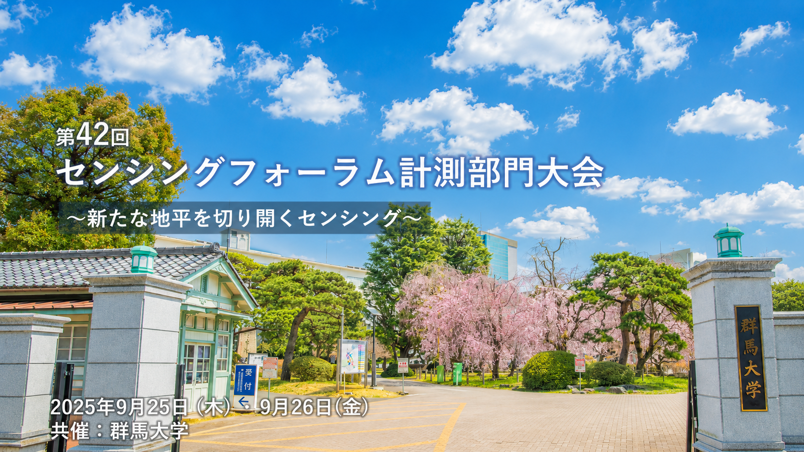

01
センシングフォーラム2025での研究発表
計測自動制御学会（SICE）主催「第42回センシングフォーラム」（2025年9月・群馬大学桐生キャンパス）にて、当社社員2名が「センシングデータ価値化へのアプローチ」「IoTデータのクラウド管理におけるブロックチェーン活用の挑戦と展望」を発表。センシングデータの真正性・追跡性・ガバナンスを高める設計指針と、ブロックチェーンとクラウドの連携によるデータ管理・価値循環の構想を示しました。